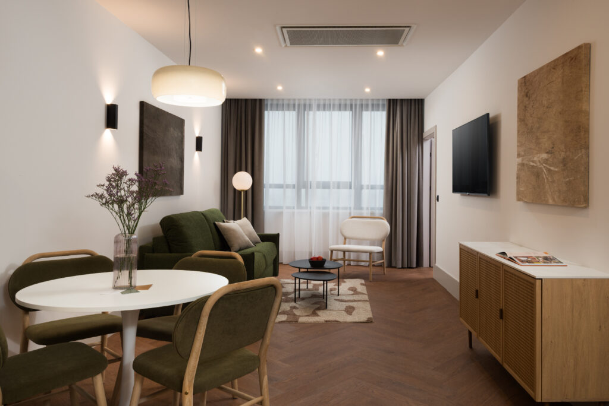
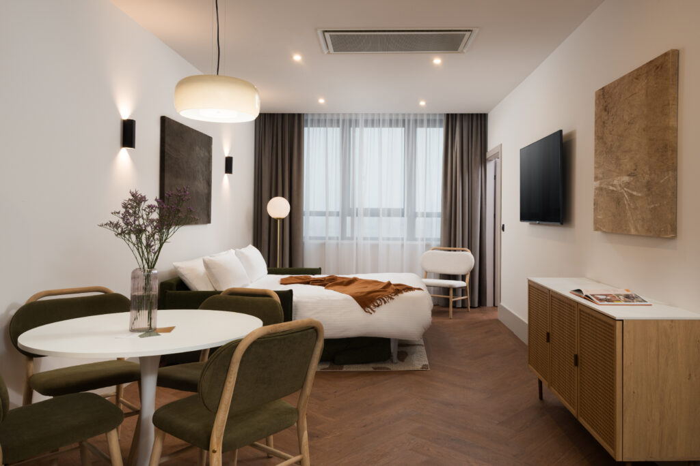
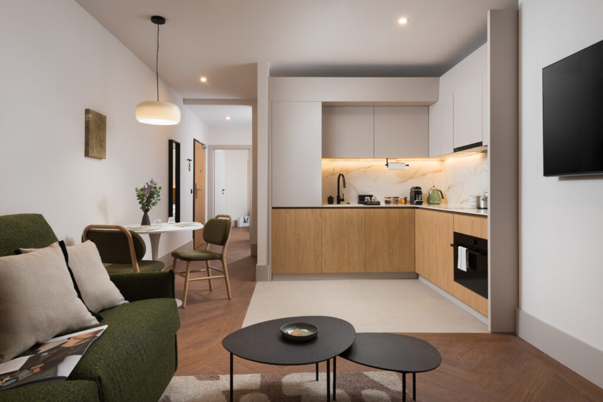
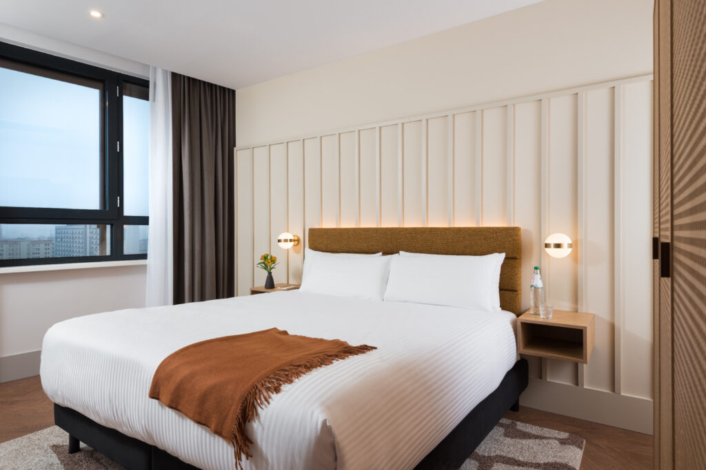

Grzybowska 45, 00-844 Warszawa, Poland · Map
Warsaw · Serviced Apartments
Set in the heart of Warsaw's vibrant Wola district, master Wola Serviced Apartments places you exactly where you need to be, close to the city's cultural highlights, buzzing business hubs, and an exciting mix of cafés, parks, and local markets. Whether you're here for work, family time, or simply to explore, this is your space to settle in and stay your way.
With 113 thoughtfully designed apartments ranging from studio apartments to spacious three-bedroom layouts, master Wola combines flexibility and comfort with a clear sense of style. Each space showcases contemporary minimalist design with Scandinavian influences, blending clean lines, natural textures, and warm earthy tones to create a modern yet cozy atmosphere you'll want to come home to. Ideal for families discovering Warsaw together, couples on a city escape, or business travelers in town for a longer stay, master Wola offers the balance of independence and ease, right where the city beats strongest.
113 apartments
At master Wola, every apartment is more than just a place to stay. It is a space that adapts to you. With 113 modern serviced apartments, from efficient studio layouts to generous three bedroom options, you will find the right fit for solo stays, couples, family trips, or business travel.




Services & facilities
Take care of your essentials with easy access to an on-site self-service laundry room
Store your bags securely before check-in or after check-out for extra flexibility
Stay on track with your fitness goals and enjoy full access to the modern, fully equipped gym at Leonardo Hotel.
The neighbourhood
Grzybowska 45, 00-844 Warszawa, Poland
The interactive map could not load. The address is Grzybowska 45, 00-844 Warszawa, Poland.
Grzybowska 45, 00-844 Warszawa, Poland
Wola is where Warsaw’s past and future meet. Once a historic industrial area, today it is one of the city’s most exciting and fast-changing districts, home to modern office towers, creative spaces, cultural institutions, and green parks all side by side. The neighborhood buzzes with energy during the day and transforms into a hub of food spots and local hangouts by night.
From master Wola Serviced Apartments, you are just steps from Rondo ONZ metro station and within easy walking distance of some of Warsaw’s most iconic sights, including the Warsaw Uprising Museum and the Palace of Culture and Science.
And right in the middle of it all, master Wola Serviced Apartments offers a modern retreat designed to feel like home, no matter how long you stay.
Good to know
FAQ
master Wola offers Serviced Apartments that combine private living spaces with hotel-style services, including virtual guest support, housekeeping, and laundry facilities.
master Wola suits business travellers on extended assignments, couples on a city break, and families exploring Warsaw. Spacious layouts, fast Wi-Fi, fully equipped kitchens, and a central Wola location make it a versatile choice for all.
Yes, free high-speed Wi-Fi covers every apartment and all communal areas of the building.
No, smoking is strictly prohibited inside all apartments and indoor common areas.
master Wola offers step-free elevator access from the street level to every floor; however, the apartment interiors are not necessarily optimised for accessibility needs.
Multilingual guest support responds around the clock through WhatsApp, phone and email.
Weekly housekeeping with fresh towels and linen changes is provided for stays of seven nights or more. Additional cleaning can be arranged upon request at an additional cost.
Yes, laundry detergent and communal ironing boards are supplied in the on-site self-service laundry room.
Yes, master Wola offers 24/7 guest support for your convenience. You can reach our team at any time via WhatsApp, email, or phone.
Yes. Every apartment includes a dedicated workspace, high-speed Wi-Fi, and a fully equipped kitchen. The property is located in Wola, Warsaw’s main business district, with easy metro access. Corporate rates are available on request.
Yes. Fully equipped kitchens, self-service laundry facilities, weekly housekeeping, and apartment-style layouts make master Wola a comfortable and practical base for stays of any length.
Yes, each apartment has individual controls; however, the system operates seasonally, switching between heating or cooling rather than both simultaneously.
Yes, each apartment features a full kitchen complete with dishwasher, combination microwave-oven and cookware.
Yes, every unit offers a Smart TV pre-loaded with Netflix for guest streaming entertainment.
Yes, complimentary entry to the fully equipped Leonardo Hotel gym is included during the stay.
Our Spacious Family Two-Bedroom Apartments comfortably host up to eight guests within an expansive 85 m² layout.
Yes, an electronic safe is installed inside every apartment for secure storage of valuables.
At master Wola, guests have access to a shared self-service laundry room equipped with complimentary laundry detergent. Additionally, our Three-Bedroom Apartments feature the exclusive benefit of private, in-unit washing machines and dryers.
Our Three-bedroom apartments include step-free walk-in showers with wider doorways; however, the property does not meet the full requirements to be considered officially accessible.
Yes, dining tables double as spacious laptop workstations and include convenient power outlets nearby.
Yes, all bathrooms are stocked with complimentary toiletries and a hairdryer is provided in every apartment.
Studios start at 30 m², Studios with Sofa Bed are 38 m², One-Bedrooms 43 m², Two-Bedrooms 70 m², Three-Bedrooms 95 m², and Family Two-Bedroom apartments up to 85 m².
Yes, guests can order via apps such as Wolt or Uber Eats. Couriers deliver to the building entrance, where guests collect their orders directly.
master Wola offers the best of both worlds: it is fully self-catering with equipped kitchens for home-cooked meals, yet guests also enjoy access to the restaurant and bar at the neighboring Leonardo Royal Hotel Warsaw.
Yes, full sets of pots, pans, plates, glasses and utensils are stocked in all kitchens.
Yes, every kitchen is fully equipped for your morning routine, featuring an electric kettle and a Nespresso capsule coffee machine.
Yes! You can choose a breakfast-inclusive rate when booking, or simply pay the Leonardo Hotel directly on the morning of your visit.
Yes, guests are welcome to order room service from the neighboring Leonardo Hotel. Please contact us for further details to place an order.
Yes, several convenience stores and mini-markets are within a five-minute walk of master Wola.
Cancellation terms depend on the chosen rate: flexible bookings may be cancelled free of charge until the stated deadline, while non-refundable rates are prepaid and cannot be cancelled.
No security deposit is taken, but a valid credit card is required and may be pre-authorised for any damages or incidentals.
Yes, master Wola welcomes trained dogs for an additional charge of 80 PLN per night; they must never be left unattended, stay off sofas and beds, and any damage is the guest’s responsibility.
Payments are processed via a secure online link accepting major credit and debit cards.
At least one guest in each reservation must be 18 years of age or older.
No, parties, events or loud gatherings are forbidden under the house rules.
Yes, children of all ages are welcome. Travel cots can be arranged on request, subject to availability – please notify the team ahead of arrival.
master Wola does not provide rollaway or extra beds. Guests requiring additional sleeping capacity should select a Studio with Sofa Bed or a larger apartment at the time of booking.
The confirmed rate includes VAT. Warsaw does not currently impose a mandatory tourist tax, so the quoted price reflects the full cost.
Rondo ONZ Metro Station is the nearest stop, located just a five-minute walk away.
The Warsaw Uprising Museum is less than 1.5 km from master Wola.
Warsaw Central Station is approximately a 1.4-kilometre walk away, or about a 10-minute drive, depending on traffic.
A standard taxi journey from Chopin Airport averages twenty-five minutes in normal city traffic.
The Palace of Culture and Science is located within 1.7 km from master Wola.
master Wola is located at Grzybowska 45, 00-844 Warszawa, Poland, in the heart of Warsaw’s Wola business and cultural district.
The property operates with a self-check-in system. Your unique apartment PIN code will be sent to you via WhatsApp and email at 9:00 AM on your arrival day. To ensure timely delivery, please confirm your reservation is fully paid and your online registration is complete.
Yes, a secure luggage room allows guests to store bags before arrival or after departure.
Early arrival or late departure can be arranged subject to availability and may incur additional fees.
Check-in begins at 3:00 PM and check-out is required by 11:00 AM on departure day.
The entry details and personal PIN code are provided 9:00 AM on arrival day.
Yes, guests are required to complete a digital identity verification step before the access code is issued, via the pre-arrival registration link sent by the team.
Please contact the Guest Relations Team immediately via WhatsApp (+48 22 103 8004) or email (easytravelagency@trustagent.space). A representative will verify your booking and assist.
Official invoices can be requested during the booking process or after check-out by contacting our support team via WhatsApp or email. Please note that invoices are issued upon check-out; if you require specific details or company information on your invoice, kindly notify us before your departure date.
Guests reach Food Town, Browar Warszawski, Primitivo Wine Bar and several cafés within five minutes.
Park Świętokrzyski and Park Mirowski are both within 1.8km and ideal for outdoor exercise.
Warsaw Old Town lies roughly two kilometres away and is easily reached by direct tram in fifteen minutes.
Yes, late-night grocery stores are located within a short radius of master Wola, providing easy access to groceries and supplies around the clock.
You’ll find excellent shopping nearby! The unique boutiques at Norblin Factory are just 0.5 km away, while the larger Złote Tarasy shopping mall is located 1.6 km from the property.
Yes, The POLIN Museum of the History of Polish Jews and the remains of the Warsaw Ghetto boundary wall are within walking distance or a tram ride from master Wola.
Yes, there are nearby public garages.
Gallery
Every photo of master Wola. Tap any image to open it full size.
Save More, Stay More: Book Directly With master For A 5% Discount Today! — master Wola